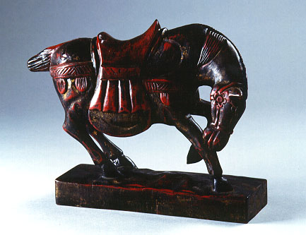

義助慰安婦 —— 李敖百件珍藏義賣藝術品（第43件） 品 名： C12. 木雕戰馬 預估價： 2 萬 成交價： 12 萬 說 明： 唐宋八大家中的韓愈曾說：「一經聖人手，議論安敢道﹖」李敖卻說：「一經李敖手，議論就要道！」。這匹馬的年份雖輕，但雕工卻很好，雄壯威武，是件上品。唐太宗曾命人雕出他生前最心愛的六匹馬於墳前陪葬，可見中國人愛馬的程度。 
唐宋八大家中的韓愈曾說：「一經聖人手，議論安敢道﹖」李敖卻說：「一經李敖手，議論就要道！」。這匹馬的年份雖輕，但雕工卻很好，雄壯威武，是件上品。唐太宗曾命人雕出他生前最心愛的六匹馬於墳前陪葬，可見中國人愛馬的程度。